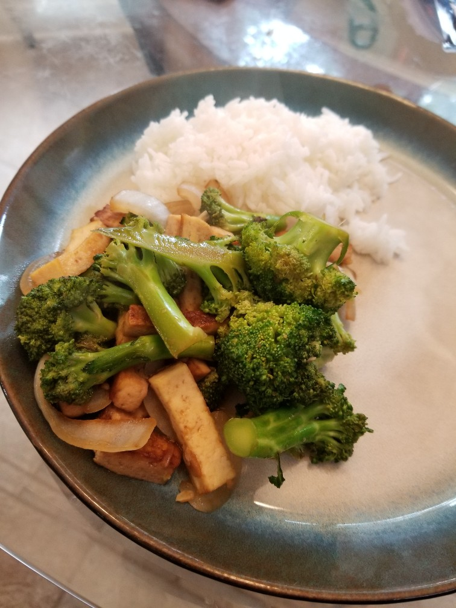
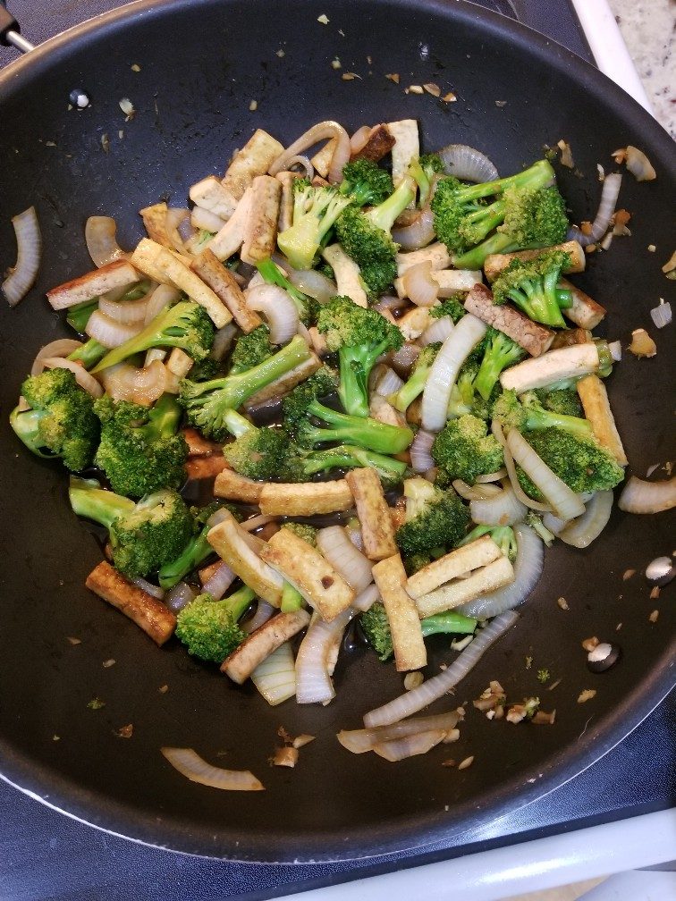

Chinese-American Tofu and Broccoli
Adapted From Serious Eats: link

Ingredients
- Extra-firm tofu
- Chopped Broccoli Florets
- Soy Sauce
- Sugar
- Oyster Sauce
- Vinegar
- Sesame Oil
- Garlic
- Ginger
- Onion
Directions
- Press and dry tofu, cut in pieces
- Heat oil in wok and cook tofu, adding soy sauce. Set aside when cooked.
- Add garlic and ginger, cook until start to brown. Add broccoli and onion. Let cook a few minutes, then add remaining sauce ingredients. When almost done, add in cooked tofu.
- Serve over rice.
Notes
- 2020-06-18 - Turned out good - cooked tofu with toyomansi, took a while for tofu to crisp up, but did get there eventually.
